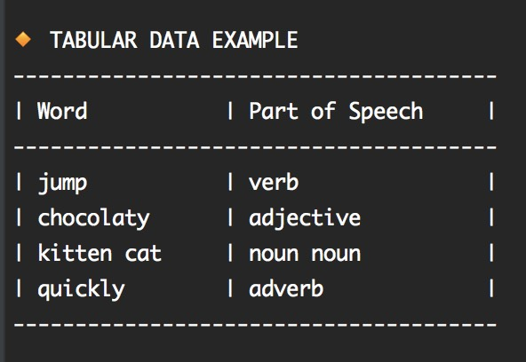

You can easily create tables with Cloudy.
The following code:
echo_heading "Tabular Data Example"
table_set_header "Word" "Part of Speech"
table_add_row "jump" "verb"
table_add_row "chocolaty" "adjective"
table_add_row "kitten cat" "noun noun"
table_add_row "quickly" "adverb"
echo_table
Will produce output like the following

Control the Padding
Use the options --lpad and --rpad to control the horizontal padding.
echo_heading "Tabular Data Example"
table_set_header "Word" "Part of Speech"
table_add_row "jump" "verb"
...
echo_table --lpad=10 --rpad=10